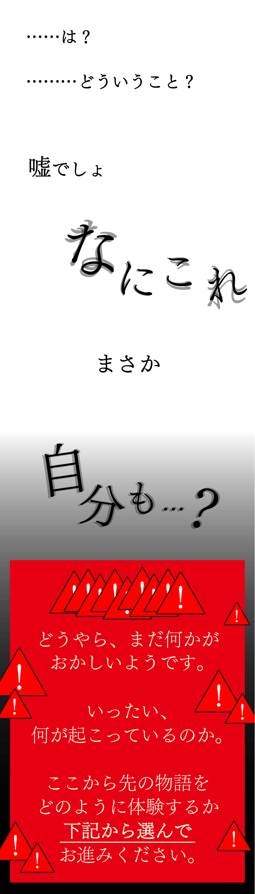
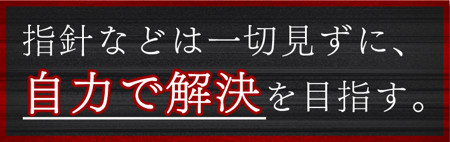
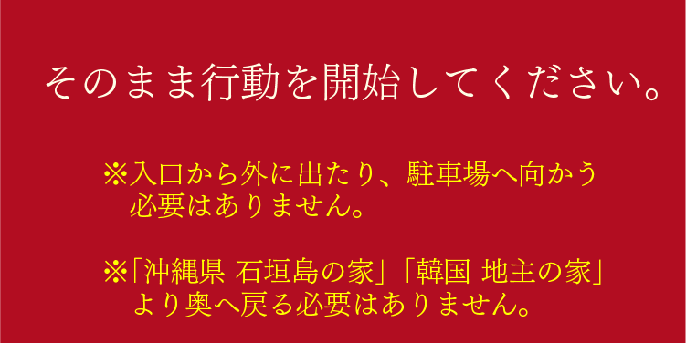
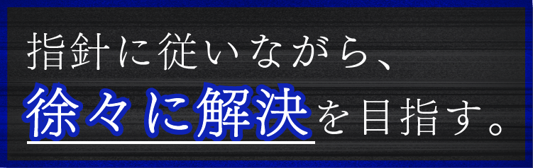
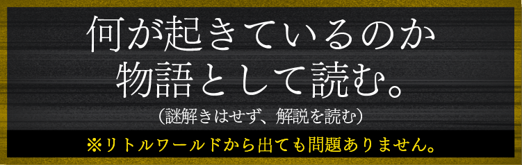
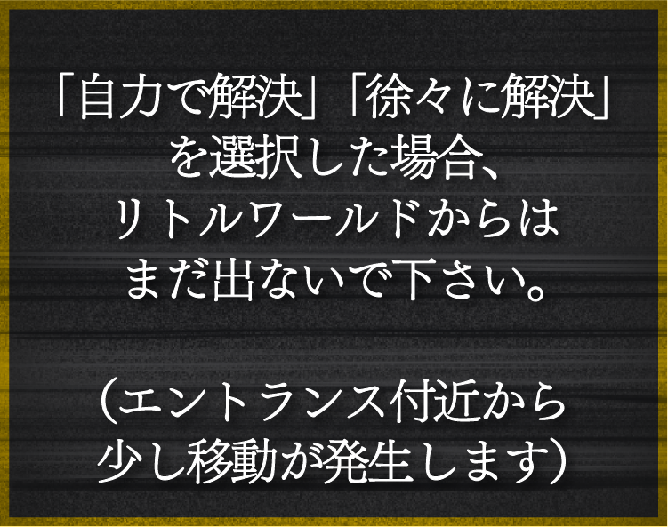

ヒントは「指針に従って解決を目指す」前提で記載します。
自力で解決しようとしている方は、一度指針に従って解き進めてください。
ここが「何の」パラレルワールドかを考えるにあたって、パラレルワールドのエリア区切りについて考えることが有効となる。
パラレルワールドでは何が起こるか改めて確認して、それが発生する場所、しない場所を特定しよう。
パラレルワールドでは看板の変化や文字化けが起きる。
ユウが送った写真で文字化けが発生しているエリアと、「あなた」が看板の変化を目にしてしまったエリアを確認してみよう。
スマホの地図アプリを使うと、パラレルワールドの外はつぶれて表示されるようだ。
本編クリア後のストーリーを見返して、ユウや、「あなた」のスマホの地図アプリがどのような区切りでつぶれた表示になっていたか確認しよう。
「あなた」がパラレルワールドに移転してしまう直前に見ていた地図アプリでは、地図上に点線が描かれていた。
それを「あなた」が通り越した瞬間にその点線を境に表示がつぶれた場所も表示された。
この点線は、何を意味する点線だろうか。
そして、その点線の意味を踏まえて、今「あなた」がいるエリアはどこだろうか？
点線は県境を表していた。
「あなた」が県境を越えて「岐阜県」に入った瞬間、地図の表示が変わり、目の前にいたユウも消えてしまった。
よって今「あなた」は、「岐阜県」のパラレルワールドにいることになる。
「ぎふけん」と報告しよう。